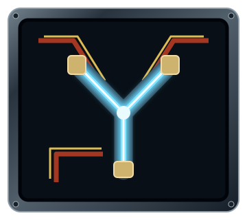
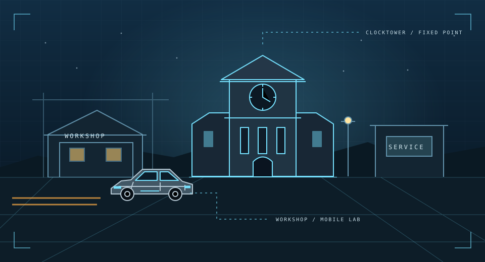

THE FUTURE CALLED. YOU'RE NOT TOO LATE.
RAG to the Future. Your next stop?
The beginning of AI.
I’ve prepared a journey through AI. Come into my workshop—we’ll start with the foundations and build from there, one experiment at a time.

FLUX CAPACITORYOUR WEBSITE IS THE FLUX CAPACITOR
Where we're going,
we'll need understanding.
PART I · 1985 · OUT OF TIME
Come into my workshop. I'll help you give the console a voice, carry a conversation, and connect its first tools.
Enter the 1985 workshop →A LOT OF REAL LEARNING.
THE WORKSHOP ATLAS
One square.
Three timelines.

YOUR THREE-PART ADVENTURE
Great systems take time.
GO BACK. GET THE BASICS.
Out of
Time
Come into my workshop. We’ll give the console a voice, carry its conversation forward, and connect its first tools.
GO FORWARD. TAKE CONTROL.
The Future Workshop
Join me in the future workshop. We’ll connect the working pieces, trace each decision, and pause when a person needs to choose.
GO FURTHER. EARN TRUST.
The Last
Departure
Meet me in the frontier workshop. The instructions we need are in the journals; we’ll find the right pages before asking for an answer.
“You don’t need to learn everything at once. I’ll help you build it, one step at a time.”
I’ll be your professor for this journey. You’ll try the ideas, inspect the results, and gradually take the controls. We’ll keep the story optional and the learning practical.
Let's get you back to the basics ↗